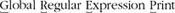

3.2. A Casual Stroll Across the Regex LandscapeI'd like to start with the story about the evolution of some regular expression flavors and their associated programs. So, grab a hot cup (or frosty mug) of your favorite brewed beverage and relax as we look at the sometimes wacky history behind the regular expressions we have today. The idea is to add color to our regex understanding, and to develop a feeling as to why "the way things are" are the way things are. There are some footnotes for those that are interested, but for the most part, this should be read as a light story for enjoyment. 3.2.1. The Origins of Regular ExpressionsThe seeds of regular expressions were planted in the early 1940s by two neurophysiologists, Warren McCulloch and Walter Pitts, who developed models of how they believed the nervous system
worked at the neuron level.[
Through the 1950s and 1960s, regular expressions enjoyed a rich study in theoretical mathematics circles. Robert Constable has written a good summary [
Although there is evidence of earlier work, the first published computational use of regular expressions I have actually been able to find is Ken Thompson's 1968 article Regular Expression Search Algorithm [§] in which he describes a regular-expression compiler that produced IBM 7094 object code. This led to his work on qed, an editor that formed the basis for the Unix editor ed.
ed's regular expressions were not as advanced as those in qed, but they were the first to gain widespread use in non-technical fields. ed had a command to display lines of the edited file that matched a given regular expression. The command, "g/Regular Expression/p", was read "." This particular function was so useful that it was made into its own utility, grep (after whichegrepextended grepwas later modeled). 3.2.1.1. Grep's metacharactersThe regular expressions supported by grep
and other early tools were quite limited when compared to egrep's.
The metacharacter * was supported, but + and ? were not (the latter's absence being a particularly strong drawback). grep's capturing metacharacters were \(⋯\), with unescaped parentheses representing literal text.[
The way metacharacters interact is also important. For example, perhaps grep's largest shortcoming was that star could not be applied to a parenthesized expression, but only to a literal character, a character class, or dot. So, in grep, parentheses were useful only for capturing matched text, and not for general grouping. In fact, some early versions of grep didn't even allow nested parentheses. 3.2.1.2. Grep evolvesAlthough many systems have grep today, you'll note that I've been using past tense. The past tense refers to the flavor of the old versions, now upwards of 30 years old. Over time, as technology advances, older programs are sometimes retrofitted with additional features, and grep has been no exception. Along the way, AT&T Bell Labs added some new features, such as incorporating the \{min,max\} notation from the program lex. They also fixed the -y option, which in early versions was supposed to allow case-insensitive matches but worked only sporadically. Around the same time, people at Berkeley added startand end-of-word metacharacters and renamed -y to -i. Unfortunately, you still couldn't apply star or the other quantifiers to a parenthesized expression. 3.2.1.3. Egrep evolvesBy this time, Alfred Aho (also at AT&T Bell Labs) had written egrep, which provided most of the richer set of metacharacters described in Chapter 1. More importantly, he implemented them in a completely different (and generally better) way. Not only were Alternation was added as well, and the line anchors were upgraded to "first-class" status so that you could use them almost anywhere in your regex. However, egrep had problems as wellsometimes it would find a match but not display the result, and it didn't have some useful features that are now popular. Nevertheless, it was a vastly more useful tool. 3.2.1.4. Other species evolveAt the same time, other programs such as awk, lex, and sed, were growing and changing at their own pace. Often, developers who liked a feature from one program tried to add it to another. Sometimes, the result wasn't pretty. For example, if support for plus was added to grep, + by itself couldn't be used because grep had a long history of a raw '+' not being a metacharacter, and suddenly making it one would have surprised users. Since '\+' was probably not something a grep user would have otherwise normally typed, it could safely be subsumed as the "one or more" metacharacter. Sometimes new bugs were introduced as features were added. Other times, added features were later removed. There was little to no documentation for the many subtle points that round out a tool's flavor, so new tools either made up their own style, or attempted to mimic "what seemed to work" with other tools. Multiply that by the passage of time and numerous programmers, and the result is general confusion (particularly when you try to deal with everything at once).[
3.2.1.5. POSIXAn attempt at standardizationPOSIX, short for Portable Operating System Interface, is a wide-ranging standard put forth in 1986 to ensure portability across operating systems. Several parts of this standard deal with regular expressions and the traditional tools that use them, so it's of some interest to us. None of the flavors covered in this book, however, strictly adhere to all the relevant parts. In an effort to reorganize the mess that regular expressions had become, POSIX distills the various common flavors into just two classes of regex flavor, Basic Regular Expressions (BREs), and Extended Regular Expressions (EREs). POSIX programs then support one flavor or the other. Table 3-1 on the next page summarizes the metacharacters in the two flavors. One important feature of the POSIX standard is the notion of a locale, a collection of settings that describe language and cultural conventions for such things as the display of dates, times, and monetary values, the interpretation of characters in the active encoding, and so on. Locales aim to allow programs to be internationalized. They are not a regex-specific concept, although they can affect regular-expression use. For example, when working with a locale that describes the Latin-1 encoding (also called "ISO-8859-1"), à and À (characters with ordinal values 224 and 160, respectively) are considered "letters," and any application of a regex that ignores capitalization would know to treat them as identical.
Another example is \w, commonly provided as a shorthand for a "word-constituent character" (ostensibly, the same as [a-zA-Z0-9_] in many flavors). This feature is not required by POSIX, but it is allowed. If supported, \w would know to allow all letters and digits defined in the locale, not just those in ASCII. Note, however, that the need for this aspect of locales is mostly alleviated when working with tools that support Unicode. Unicode is discussed further beginning on page 106. 3.2.1.6. Henry Spencer's regex packageAlso first appearing in 1986, and perhaps of more importance, was the release by Henry Spencer of a regex package, written in C, which could be freely incorporated by others into their own programsa first at the time. Every program that used Henry's package and there were many provided the same consistent regex flavor unless the program's author went to the explicit trouble to change it. 3.2.1.7. Perl evolvesAt about the same time, Larry Wall started developing a tool that would later become the language Perl. He had already greatly enhanced distributed software development with his patch program, but Perl was destined to have a truly monumental impact. Larry released Perl Version 1 in December 1987. Perl was an immediate hit because it blended so many useful features of other languages, and combined them with the explicit goal of being, in a day-to-day practical sense, useful. One immediately notable feature was a set of regular expression operators in the tradition of the specialty tools sed and awka first for a general scripting language. For the regular expression engine, Larry borrowed code from an earlier project, his news reader rn (which based its regular expression code on that in James Gosling's Emacs).[
Perl 2 was released in June 1988. Larry had replaced the regex code entirely, this time using a greatly enhanced version of the Henry Spencer package mentioned in the previous section. You could still have at most nine sets of parentheses, but now you could use Perl 3 came out more than a year later, in October 1989. It added the /e modifier, which greatly increased the power of the replacement operator, and fixed some backreference-related bugs from the previous version. It added the Perl 4 was released a year and a half later, in March 1991, and over the next two years, it was improved until its last update in February 1993. By this time, the bugs were fixed and restrictions expanded (you could use \D and such within character classes, and a regular expression could have virtually unlimited sets of parentheses). Work also went into optimizing how the regex engine went about its task, but the real breakthrough wouldn't happen until 1994. Perl 5 was officially released in October 1994. Overall, Perl had undergone a massive overhaul, and the result was a vastly superior language in every respect. On the regular-expression side, it had more internal optimizations, and a few metacharacters were added (including \G, which increased the power of iterative matches ☞130), non-capturing parentheses (☞45), lazy quantifiers (☞141), lookahead (☞60), and the /x
modifier[
More important than just for their raw functionality, these "outside the box" modifications made it clear that regular expressions could really be a powerful programming language unto themselves, and were still ripe for further development. The newly-added non-capturing parentheses and lookahead constructs required a way to be expressed. None of the grouping pairs (⋯), [⋯], <⋯>, or {⋯} were available to be used for these new features, so Larry came up with the various '(?' notations we use today. He chose this unsightly sequence because it previously would have been an illegal combination in a Perl regex, so he was free to give it meaning. One important consideration Larry had the foresight to recognize was that there would likely be additional functionality in the future, so by restricting what was allowed after the '(?' sequences, he was able to reserve them for future enhancements. Subsequent versions of Perl grew more robust, with fewer bugs, more internal optimizations, and new features. I like to believe that the first edition of this book played some small part in this, for as I researched and tested regex-related features, I would send my results to Larry and the Perl Porters group, which helped give some direction as to where improvements might be made. New regex features added over the years include limited lookbehind (☞60), "atomic" grouping (☞139), and Unicode support. Regular expressions were brought to a new level by the addition of conditional constructs (☞140), allowing you to make if-then-else decisions right there within the regular expression. And if that wasn't enough, there are now constructs that allow you to intermingle Perl code within a regular expression, which takes things full circle (☞327). The version of Perl covered in this book is 5.8.8. 3.2.1.8. A partial consolidation of flavorsThe advances seen in Perl 5 were perfectly timed for the World Wide Web revolution. Perl was built for text processing, and the building of web pages is just that, so Perl quickly became the language for web development. Perl became vastly more popular, and with it, its powerful regular expression flavor did as well. Developers of other languages were not blind to this power, and eventually regular expression packages that were "Perl compatible" to one extent or another were created. Among these were packages for Tcl, Python, Microsoft's .NET suite of languages, Ruby, PHP, C/C++, and many packages for Java. Another form of consolidation began in 1997 (coincidentally, the year the first edition of this book was published) when Philip Hazel developed PCRE,
his library for Perl Compatible Regular Expressions, a high-quality regular-expression engine that faithfully mimics the syntax and semantics of Perl regular expressions. Other developers could then integrate PCRE into their own tools and languages, thereby easily providing a rich and expressive (and well-known) regex functionality to their users. PCRE is now used in popular software such as PHP, Apache Version 2, Exim, Postfix, and Nmap.[
3.2.1.9. Versions as of this bookTable 3-2 shows a few of the version numbers for programs and libraries that I talk about in the book. Older versions may well have fewer features and more bugs, while newer versions may have additional features and bug fixes (and new bugs of their own).
3.2.2. At a GlanceA chart showing just a few aspects of some common tools gives a good clue to how different things still are. Table 3-3 provides a very superficial look at a few aspects of the regex flavors of a few tools. A chart like Table 3-3 is often found in other books to show the differences among tools. But, this chart is only the tip of the icebergfor every feature shown, there are a dozen important issues that are overlooked. Foremost is that programs change over time. For example, Tcl didn't used to support backreferences and word boundaries, but now does. It first supported word boundaries with the ungainly-looking [:<:] and [:>:], and still does, although such use is deprecated in favor of its more-recently supported \m, \M, and \y (start of word boundary, end of word boundary, or either). Along the same lines, programs such as grep and egrep, which aren't from a single provider but rather can be provided by anyone who wants to create them, can have whatever flavor the individual author of the program wishes. Human nature being what is, each tends to have its own features and peculiarities. (The GNU versions of many common tools, for example, are often more powerful and robust than other versions.)
Perhaps as important as the easily visible features are the many subtle (and some not-so-subtle) differences among flavors. Looking at the table, one might think that regular expressions are exactly the same in Perl, .NET, and Java, which is certainly not true. Just a few of the questions one might ask when looking at something like Table 3-3 are:
Many issues must be kept in mind, even with a tidy little summary like Table 3-3 as a Superficial guide. If you realize that there's a lot of dirty laundry behind that nice façade, it's not too difficult to keep your wits about you and deal with it. As mentioned at the start of the chapter, much of this is just Superficial syntax, but many issues go deeper. For example, once you understand that something such as Of course, what a tool can do with a regular expression is often more important than the flavor of its regular expressions. For example, even if Perl's expressions were less powerful than egrep's, Perl's flexible use of regexes provides for more raw usefulness. We'll look at a lot of individual features in this chapter, and in depth at a few languages in later chapters. | ||||||||||||||||||||||||||||||||||||||||||||||||||||||||||||||||||||||||||||||||||||||||||||||||||||||||||||||||||
 ]
] ]
] end$|^start
end$|^start . But that's OK, since alternation wasn't supported either!
. But that's OK, since alternation wasn't supported either!